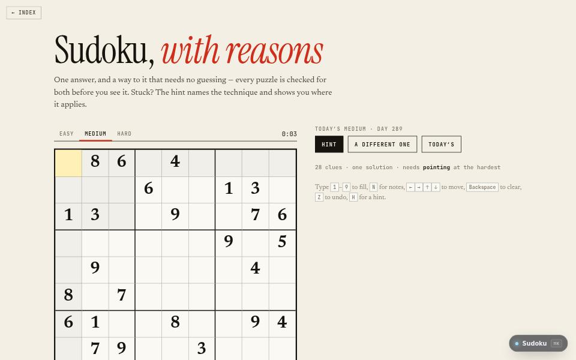

game · about 10 min · The Playground Reef
Sudoku
A daily Sudoku at three levels, each with exactly one answer and a way to it that needs no guessing.

The problem
Generated puzzles often have two answers or need a guess. Every one here has one answer and a logical path.
What it does
- A daily puzzle at three levels
- Every puzzle has one answer and a path that needs no guessing
- Hints that name the technique and show where it applies
The most interesting decision
A hint that teaches the move
Instead of filling a square, the hint says why, and any crossings-out it needs come first, because they are the part worth learning.
Built with
- Bitmask backtracking
- Human-technique solver
- Daily seed
Evidence
The hint names the technique and shows you where it applies. Read its tests
Its world
Terraces of a grid, with exactly one way down.